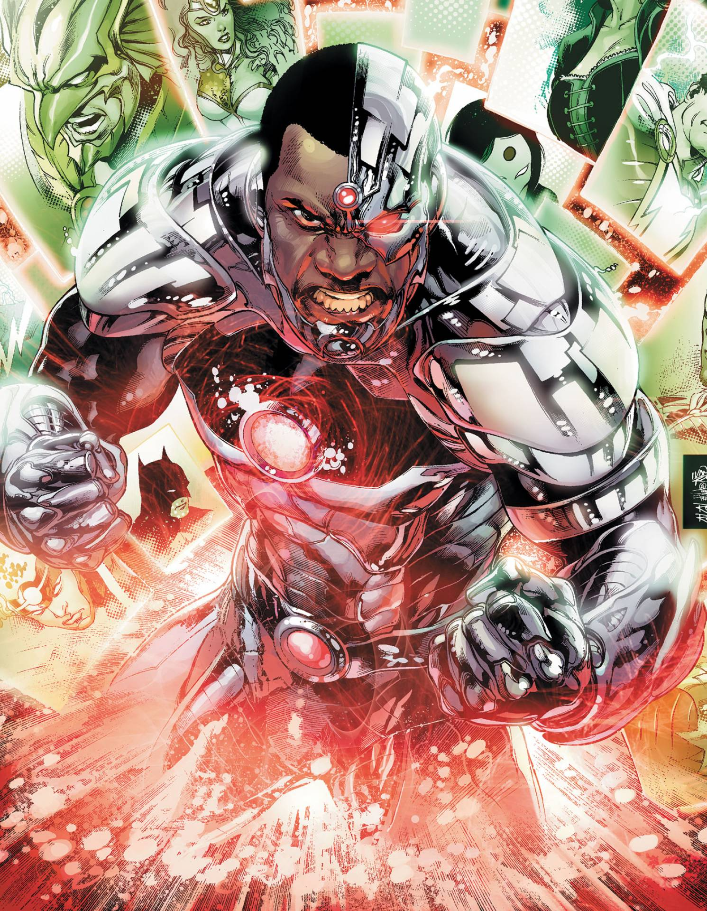

|
Victor Stone is the son of Silas Stone and Elinore Stone. His mother was killed in an accident while working with his father on an expirement and Silas Stone then started working and ignoring his son. Victor Stone grew up as a excellent football player and was visiting his dad when the invasion of Darkseid (An alien who conquers worlds) caused him to be severly wounded In an effort to save him his father used expiremental human and alien technology that was untested. It resulted in Cyborg. Since he became Cyborg during the invasion that brought the Justice League together he too became one of its founding members, while still being a tennager. Though unlike the other Justice League members he does not have a secret identity and is always a superhero. |
Half-ManHalf-Machine
|
|||||||||||||||||||||